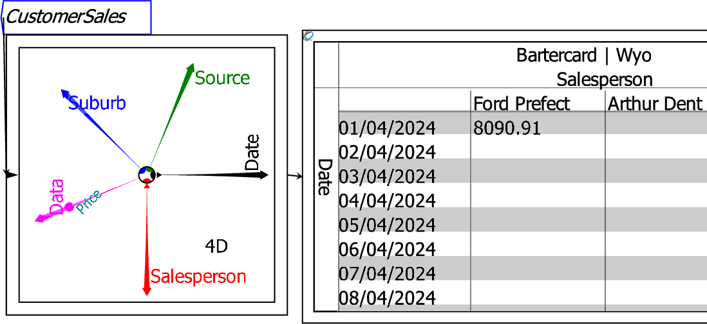
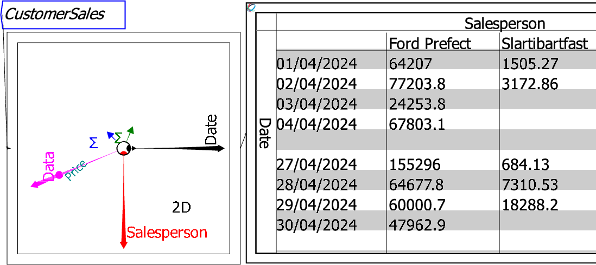

The Sheet widget displays data as in a typical spreadsheet program.
The default sheet is a blank square box, as shown above. Once data is attached to the sheet, formatted and hierarchical data will fill the sheet. The example shown below has 4 dimensions—the data is Price, while the dimensions are Date, Salesperson, Suburb and Source. Data for the first two dimensions—the downward and right-pointing Ravel axes—is shown, while the first entry in the third and higher order dimensions are shown at the head of the sheet. You can alter the displayed data by manipulating the Ravel attached to the sheet.

To use the Sheet widget, simply attach a variable or Ravel to it via a wire. The input is on the left-hand side of the sheet widget box. This sheet displays the input data as a number (in the case of a variable being simulated in a Minsky model) or an array of data (in the case of a Ravel). Note that only one wire can be connected to a sheet, as the sheet can only display a single input value–however, the Ravel operators meld and merge enable you to combine data from several Ravels to allow them to be displayed in a single sheet.
By default, a Sheet outputs the beginning of the data series. The context menu allows you to specify that the data displayed comes from the Head of the data (the default), its Tail (the final entries in the data series), or the Head and Tail. The next figure shows the Head and Tail displayed for the rows of this sheet.
